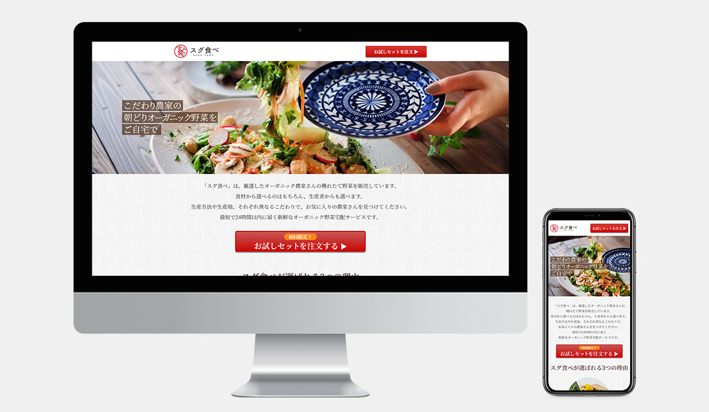

WORKS DETAIL
「スグ食べ」LPサイト
Webサイト（PC、スマートフォン）
デジタルハリウッドSTUDIO 中間課題
デジタルハリウッドSTUDIO 中間課題

リンク
ソースコード
担当
デザイン / コーディング
制作期間
1ヵ月
使用ソフト
Photoshop / Dreamweaver
作成プロセス
オーガニック食材のLPサイトです。お試し購入していただくことを目的としています。
サイトのコンセプトは、 新鮮さ・信頼感・安心感・健やかさ・ヘルシーさの5つを伝えるサイトです。
ターゲットは成長期の子供がいる母親や、働き盛りの夫がいる奥様です。
また、お金をかけてでも食にこだわりたい、丁寧なくらしがしたいと感じている所得の高い層が利用することを意識して制作しました。
デザインコンセプト
- ナチュラルさを表現するため、全体的に彩度を落とした色合いとする。
- お試しセットの注文ボタンは、目立たせるために濃い色にし、光沢を付ける。
- 高級感や信頼感を出すために、見出し等の大きい文字は明朝体のフォントを使う。
- 野菜や生産者の写真を多く使い、利用者に新鮮さや安心感を伝える。
- お客様の興味を引く→気軽に注文できる流れを提示する→安心感やオリジナリティをアピールする→注文ボタンを押してもらう
という流れになるようページを構成する。
ポイント
-
食にこだわる方や丁寧なくらしがしたい方をメインターゲットとしているため、「このサイトで野菜を注文すればこのような生活ができます」という点をアピールできるよう、美味しそうなサラダが食卓に並んでいる写真をメインビジュアルにしました。
-
PC版で横並びになっている要素はスマートフォン版では縦に並ぶようになっていますが、お客様の声についてはそのまま縦に並べると非常に長い項目となってしまうため、横にスクロールすることで1件ずつ見られるように設計しました。